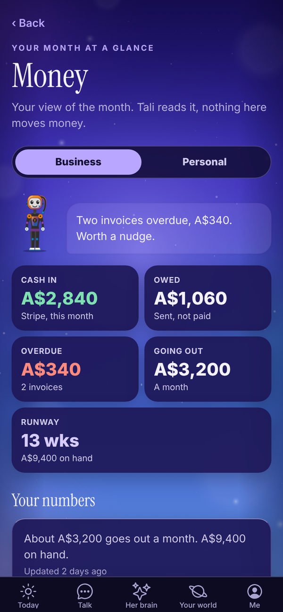
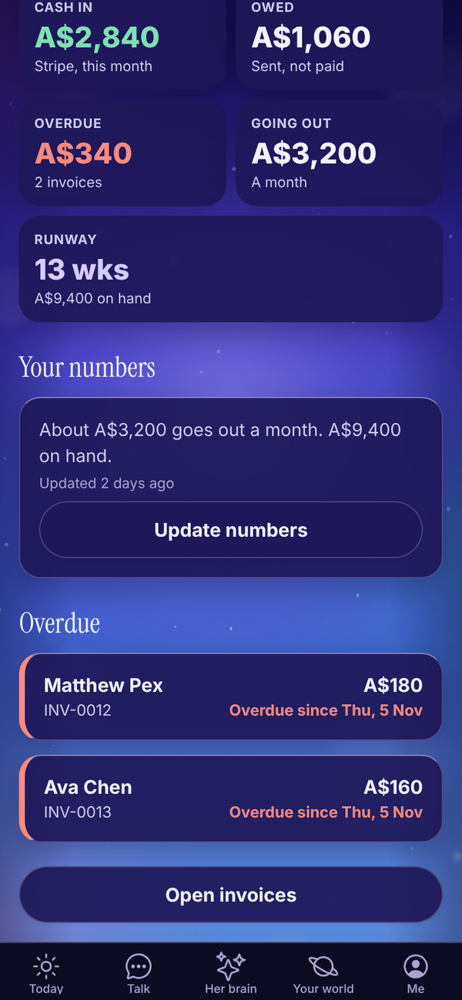
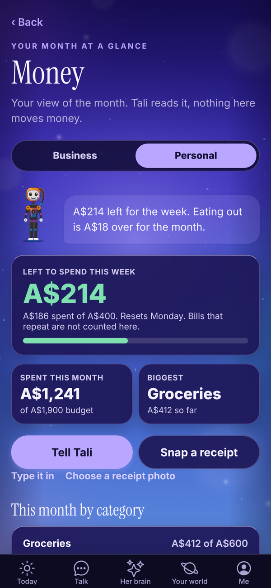
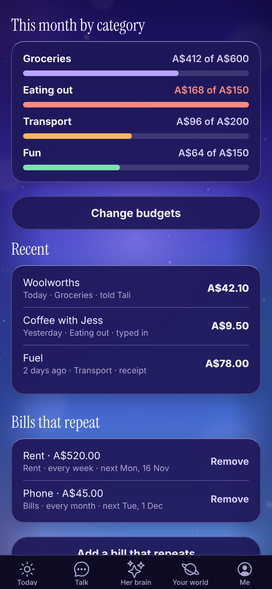

Tali HQ guide
Money
Business: cash in, owed, overdue and runway. Personal: what's left to spend this week, budgets, spends and bills that repeat.
Money is your view of the month, with two sides. Business is five numbers and a runway. Personal is what you have left to spend this week, your budgets and your bills. Tali reads it before your brief. Nothing on this screen moves money. Tali HQ
Open it from Your world, Work, Money (or Home and money, Personal money), or tap the Money tile on Today. Switch sides with Business and Personal at the top.


Business: the numbers#
- Cash in: money in this month. With Stripe connected it's your Stripe takings this month ("Stripe, this month"). Without Stripe it's invoices marked paid this month ("Paid invoices, this month").
- Owed: invoices sent and not paid yet.
- Overdue: sent invoices past their due date, and how many.
- Going out: what you spend each month. You enter this.
- Runway: how many weeks your cash on hand would last at your monthly spend. It turns orange under 6 weeks.
At the top, Tali gives you one line about it, like "Two invoices overdue, A$340. Worth a nudge." Working out this line uses no credits.
Add your numbers#
Runway needs two things: what goes out each month, and how much cash you have.
- Under Your numbers, tap Add your numbers (or Update numbers).
- In Going out each month (A$), type your usual monthly costs: rent, software, insurance, and what you pay yourself.
- In Cash on hand (A$, optional), type what's in the bank. With Stripe connected you can leave it blank, and Tali uses your Stripe balance.
- Tap Save.
"Updated" under your numbers shows when you last changed them.
Overdue invoices#
Under Overdue, each late invoice shows the client, number, amount and "Overdue since". Tap one to open it in Invoices, or tap Open invoices. See Invoices and Stripe.
Personal money#
The Personal side is a simple spend and budget tracker for your own money.


- Left to spend this week: one weekly amount, Monday to Sunday. It turns red when you're over. It resets every Monday.
- Spent this month, against your monthly budgets, and your Biggest category so far.
- This month by category, each against its budget.
- Recent: your latest spends. Tap one to fix or delete it.
- Bills that repeat: rent, phone, subscriptions.
Log a spend#
Three ways in:
- Tell Tali: say "spent $42 at Woolies" in Talk. She logs it and tells you what's left for the week. A spend logged pill under her reply opens this screen.
- Snap a receipt: take or choose a photo and Tali reads who, how much and when. Check it, then Save. The photo isn't kept, and it stays out of your business receipts.
- Type it in: What was it, Amount (A$), Date and Category, then Save.
The categories are Groceries, Rent, Bills, Eating out, Transport, Fun, Health, Shopping and Other.
Set your budgets#
- Tap Set budgets (or Set a weekly amount).
- In To spend each week (A$), type what you want to spend each week, for example 400.
- Under each category, type a monthly budget, or leave it blank for no budget.
- Tap Save budgets.
Bills that repeat#
- Tap Add a bill that repeats.
- Fill in What is it, Amount each time (A$), How often (every week, every fortnight or every month) and Next date it comes out.
- Tap Save bill.
Each bill logs itself on the day. Bills count in the month and their category, but not against your weekly amount.
On the Free plan#
On Free, Money says "Money picture is part of Tali HQ", with See plans.
Questions#
Does Tali HQ connect to my bank?
No. Cash on hand is what you type in, or your Stripe balance when Stripe is connected. Tali never reads your bank.
Why does Runway say "Add costs" or "Add cash"?
Runway needs both your monthly costs and a cash figure. Add whichever is missing under Your numbers.
How is runway worked out?
Cash on hand divided by a week of your monthly costs (your monthly costs divided by about 4.33).
Why doesn't Cash in match my bank?
Without Stripe, Cash in only counts invoices you've marked paid in Tali HQ this month. Money from anywhere else isn't counted.
Does Money cost credits?
No. Telling Tali a spend in Talk uses that one message, and snapping a receipt is free.
Does Personal money connect to my bank?
No. It only counts what you tell Tali, snap or type in. That keeps it private and simple.
Can I add my own categories?
Not yet. Use the closest one, or Other.